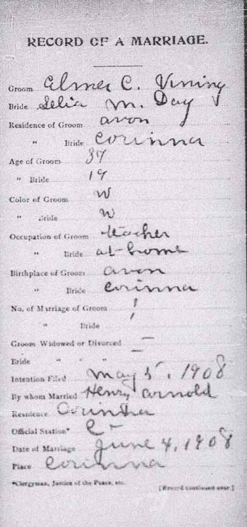
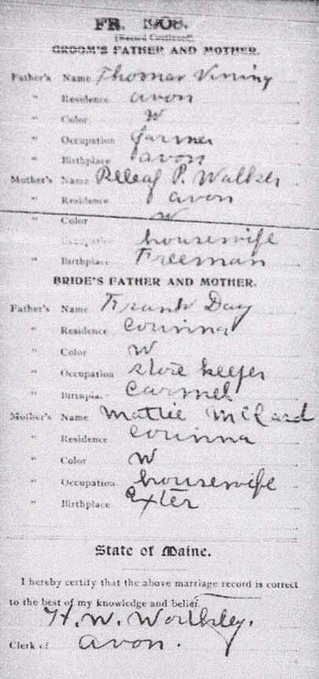
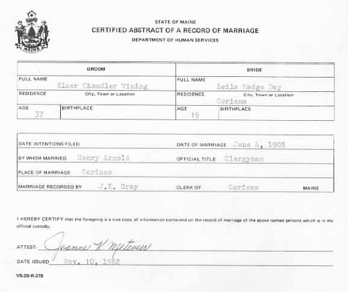
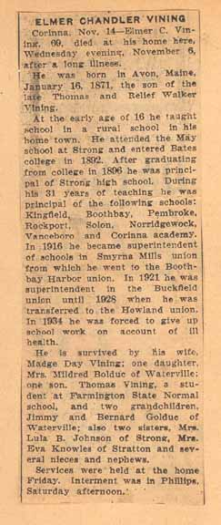
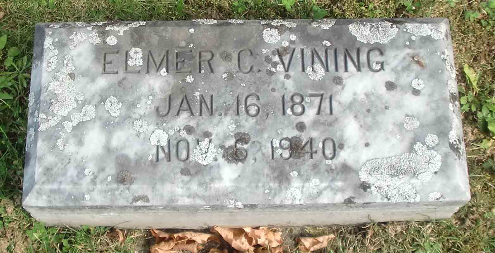
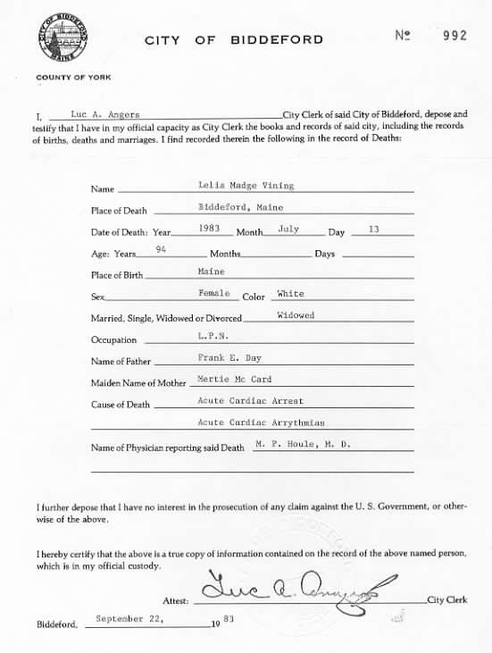

Marriage Data
Marriage record for Elmer Chandler Vining and Lelia Madge Day:



Census Data
| 1910 | 1920 | 1930 | 1940 | |
| Elmer Chandler Vining | 38 | 49 | 59 | 69 |
| Lelia Madge (Day) Vining | 21 | 30 | 41 | 51 |
| Mildred Enid Vining | 7 | 17 | married and living in separate household | |
| Thomas Frank Vining | 0 months | 10 | 20 |


Death Data
Obituary for Elmer Chandler Vining:

